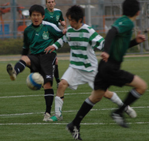
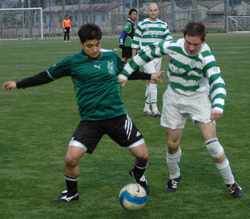
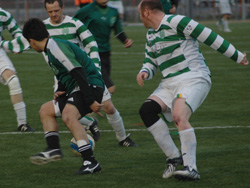

|
Fukuda Denshi, Saturday 4th April
Traditionally, this fixture involved more red cards and battle scars than goals. But with all the Irish decked out in hoops they would have to wait till after a few more Guinness before the fighting would kick off. As with the Premiership the mass importing of foreigners has diluted the local derbies, here the influx of locals has dampened the rivalry but increased the skill level.
The Celts were looking to end a bad run of two straight defeats against top four teams and there are none harder in the league to face at the moment. Hibs with a bus load of skilful, fit and fast Japanese players complimented by sturdy Americans have dominated the league from the start. But recently YCAC have like Liverpool just started to make the procession look interesting.
The game started off with Hibs swamping midfield and making plenty of running but once Henry started dominating with his physical presence and Jo linking midfield with attack, Celts began to make inroads. A great chance fell to Oli as the Hibs keeper spilt a cross (possibly his only mistake of the game) but already at full stretch Oli couldn't put it into an inviting net.
Another great chance fell to Henry only for his net breaking shot to fly over the crossbar. But if chances are not taken good teams punish you and so it happened. As Kuni made a break through the middle Will matched him and managed to get two blocks but each block fell to the persistent Hibs player and even when his initial shot was saved by Aki the rebound unfortunately fell to the attacker again who calmly chipped in. Hibs started to play and but for an amazing save from Aki it could easily have been 2-0 very quickly. But Celts these days are made of stronger stuff and good crosses from Take down the left were met by H and Yuki but the Hibs keeper saved well.
From a Celts perspective a lot of positives at half time but still 1-0 down and about to face the wind of Chiba. But Celts managed to try and play ball and created chances. An equally good save from the Hibs keeper, a couple of efforts cleared off the line and a clear penalty shout were preventing Celts from getting on the score sheet. And worse was to happen. Within minutes of each other both centre halves, Rick and Gavin had to leave the pitch with injuries.
A reorganized back four would have to survive the rest of the game against the leagues most potent attack. With Celts trying to snatch an equaliser the game had opened up which suited Hibs. However, with about 10 minutes left the boy wonder Yuki produced a bit of magic to score a fine goal. Hibs knowing what was at stake threw everything at the Celts and came very close on a number of occasions. Aki, luck and the rearranged back 4 of Joner, Will, Toru and Chris managed to hold them out.
The final whistle did come as a relief for the Celts but a draw was well merited. With Peter showing that Irish battling spirit till the end and Jo ,back after a long injury sustained in a previous game, working non-stop the Celts will look forward to the tail end of the season. Also, a word for the ref who kept good control of the game in a very fair manner.
Report by Gavin Duffy
|